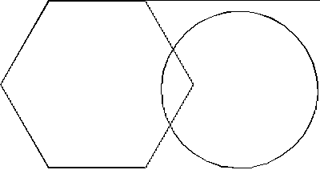
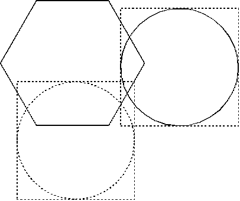

Redrawing Nondynamic Graphics
An interactive graphics application usually permits changes to the displayed
picture. For example, an object can be moved or sized, and you can plan
for this by defining particular segments as dynamic. Dynamic segments
are described in Editing Retained
Graphics and Graphics Segments.
If dynamic segments are inappropriate (when you are using nonretained graphics,
for example), you can repair the picture using a clipping region, for example,
a picture of a hexagon and a circle as shown in the following figure.
A Hexagon and Circle
If the circle is moved to another screen position by the use of an input
device, you must repair its original location and redraw it in its new location.
The following figure shows this sequence of events. Following are the steps
required to do this:
- Determine the size of the smallest rectangle
that contains the circle in its current position using a process called
boundary determination.
- Switch off the DCTL_DISPLAY flag of GpiSetDrawControl,
apply a translation transformation to the circle, and redraw it in its new
position.
- Determine the size of the smallest rectangle
that contains the circle in its new position using boundary determination.
- Use GpiConvert
to convert the model-space coordinates provided by the boundary-determination
process to device-space coordinates.
- Use the device-space coordinates of the two rectangles
to create a region, and select it as the current clipping region.
- Switch on the DCTL_DISPLAY flag of GpiSetDrawControl.
- Call GpiErase
(or set the erase-before-draw control) to erase the current contents
of the clipping region.
- Redraw the picture with the circle in its new
position. Any part of the picture within the clipping region is redrawn.
That part of the hexagon that is outside the clipping region is unaffected
by the change and does not have to be redrawn.

Defining a Clipping Region
The broken circle shows the position to which the circle is to be moved.
The two bounding rectangles overlap, and produce a complex region. If
the circle were to be moved much farther away from its start position, the
region would comprise two disjoint rectangles.
[Back: How Clipping Is Implemented]
[Next: About Boundary Determination]